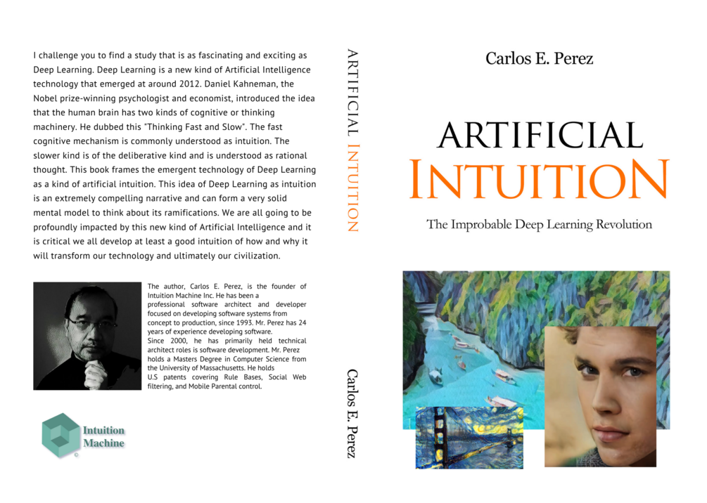

Intuition Machine
Intuition Machine

Book
Artificial Intuition
The improbable deep learning revolution — how machines arrived at intuition, grasping patterns they were never explicitly taught to derive.
Name your price
Get it →